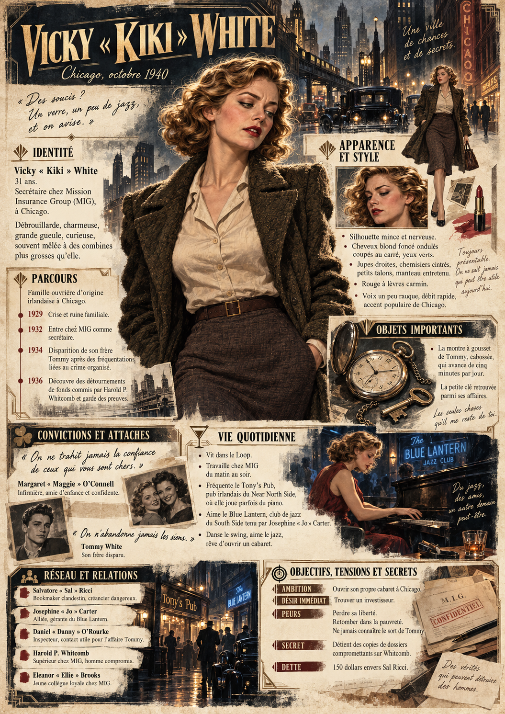

CHICAGO · OCTOBRE 1940 · ILLINOIS
Qui êtes-vous,
au fond ?
Avant que l’histoire commence, il y a votre vie. Un métier. Des habitudes. Des gens qui comptent. Et quelques choses auxquelles vous refusez de renoncer.
Créez une personne en octobre 1940. Quelques phrases par réponse suffisent ; vous pourrez les préciser au fil du jeu.
AVANT D’OUVRIR LE DOSSIER
Une histoire à votre rythme.
- Imaginez une personne.Ses origines, son quotidien, les gens et les choses auxquels elle tient.
- Explorez les huit rubriques.Quelques phrases suffisent. Vous pouvez changer d’étape et revenir sur vos réponses librement.
- Emportez votre dossier.Relisez vos réponses, puis préparez une planche illustrée en image ou un background détaillé en PDF pour le MJ.
COMPRENDRE LE CADRE
Chicago, octobre 1940
Une métropole industrielle du nord des États-Unis. Ouvrez un thème pour découvrir la vie quotidienne, les possibilités et les contraintes de votre personnage.
À VOUS D’ÉCRIRE LA SUITE
Votre histoire commence par un nom.
Les réponses sont conservées dans ce navigateur. Exportez une sauvegarde pour les retrouver sur un autre appareil.
APPENDICE FACULTATIF
Donner un visage
Le prompt réunit votre identité, votre apparence, vos métiers et vos possessions, en excluant les éléments à discuter avec le conteur. Vos choix de mise en scène complètent ces réponses dans un texte prêt à copier, avec une direction graphique peinte, gothique urbaine et néo-noire. Vous pouvez modifier le texte avant de l’utiliser.
Ces choix actualisent le prompt automatiquement. Si vous avez réécrit le prompt, utilisez « Actualiser à partir de mes réponses » pour y intégrer les nouveaux choix.
Repères historiques des décors
Les décors intérieurs et les commerces sont des propositions fictives. Les repères de la ville sont documentés par l’Encyclopedia of Chicago, Union Station et le Chicago History Museum.
DEUX FAÇONS DE RACONTER VOTRE PERSONNAGE
Dossier illustré
Choisissez votre résultat : une planche synthétique en image ou un background détaillé en PDF pour le MJ.
Mode d’emploi : cliquez sur un bouton pour copier son prompt, puis collez-le dans une IA comme ChatGPT. Joignez votre portrait éventuel ; pour la planche, ajoutez aussi la référence de Kiki disponible ci-dessous. Le texte copié ne transmet pas les images.
UNE IMAGE · L’ESSENTIEL DU PERSONNAGE
Planche synthétique illustrée
Une synthèse de toutes les rubriques, sans doublons, dans une grande composition verticale : personnage central, lieux, proches, scènes et objets importants, comme sur la référence de Kiki.
Voir ou modifier le prompt de l’image
UN PDF · RÉSERVÉ AU MJ
Background détaillé pour le MJ
Le dossier de presse illustré : une page de synthèse, puis l’histoire développée sur plusieurs pages, avec les relations, les Convictions, le quotidien et tous les éléments confidentiels renseignés.
Le PDF conserve les secrets, quels que soient les réglages de la planche.
Voir ou modifier le prompt du PDF
La référence de composition : Vicky « Kiki » White


Préparer un portrait à joindre aux prompts Facultatif
Votre portrait Facultatif
JPG, PNG ou WebP · 10 Mo maximum.
Retrouver mes résultats enregistrés dans la version précédente
LE RÉSULTAT
Votre planche illustrée
JPG, PNG ou WebP · 30 Mo maximum. L’image originale est conservée sans compression.
La planche reste dans ce navigateur. Téléchargez-la pour la conserver ou changer d’appareil : l’image complète n’est pas incluse dans le JSON.
Le dossier pour le MJ
TEXTE DÉTAILLÉ · RÉSERVÉ AU MJ
Vos réponses complètes sont rassemblées ici. Après la génération, vous pouvez remplacer ce texte par la version rédigée dans ChatGPT, ou l’ajuster vous-même. Ce bloc est conservé dans le JSON, qui est lui aussi à réserver au MJ. Le replier ne constitue pas une protection d’accès.